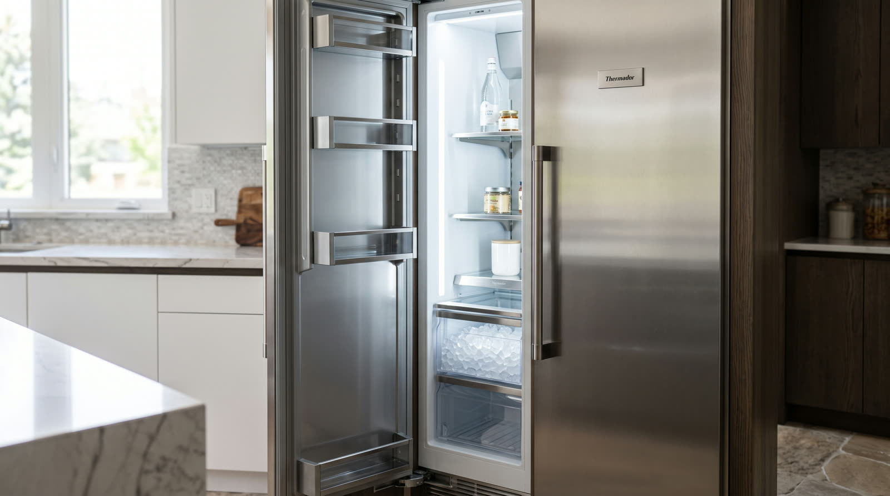

Thermador refrigeration
No ice, thin ice, strange ice, or a bin frozen into one block. Familiar territory, all of it.

Ice systems fail in repeatable ways. A fill valve choked by scale delivers a dribble that freezes inside the fill tube. A harvest motor wears until cubes stop releasing. A level sensor decides an empty bin is full and shuts the whole show down. Water quality sits behind more of these failures than most people expect.
We carry the common valves, modules, and assemblies with us, so the typical ice call ends with production restarted the same visit. While the panels are open we check filtration and mineral buildup too, because the repair lasts longer when the water stops working against it.
Minerals narrow the opening until the fill becomes a trickle. Hollow cubes and falling output are the classic evidence.
The weak fill freezes before it lands, ice plugs the tube, and production stops entirely until the blockage is cleared and the cause fixed.
Cycles stall mid release, leaving stubs, crescents, or an empty tray depending on where the motion died.
The sensor reads full against an empty bin and the machine politely retires. Testing takes minutes.
Usually a filter past its service life or a bin that has absorbed odors. We change the filter, sanitize the bin and chute, and check the door seal that let the odor through.
Enough to refill its bin roughly every day. A system consistently behind that pace is telling you a valve or sensor is slipping.
The ice maker itself is optional. The seeping valve or slow leak behind a dead ice maker is not. Cheap symptom, expensive root. Worth a look.
One phone call and the problem becomes ours. Open daily, 7am to 7pm.
First callers get first pick of the same day windows. The $89 diagnostic credits toward the repair, so the answer itself ends up costing nothing.